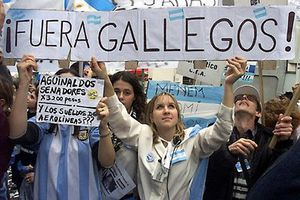

Gallego (Sudamérica)
 De: La Frikipedia, la enciclopedia extremadamente seria.
De: La Frikipedia, la enciclopedia extremadamente seria.
 El amor hacia los gallegos es incondicional
En Argentina se denomina gallegos a los reos y afines que vinieron desde Iberia, no importa si son de Andalucía, de Madrid, de La Rioja, de las Islas Canarias... o de Galicia. Si es de España, entonces es un gallego.
En su origen se trataba de gente muy laburante (trabajadora) que buscaba desesperadamente (como los Disneyworld o a Los Angeles (porque está cerca de Disneylandia) o a "Ñu Ior" porque existe un eslogan que dice "I love NY" y alli se dedican a trabajar de scorts o cosas parecidas (baby sitter, mesera, limpiabaños etc.) dando una imagen infame de Argentina y dejándole estupidamente un riquísimo y hermoso pais (Argentina) a los cabezas y a los "hermanos" ilegales procedentes de Boludia del sur o Boludia del norte, parece que los hijos de gallegos y de tanos entendieron muy mal el relato Casa Tomada de Cortázar.
Origen
Aparentemente son los descendientes de los antiguos habitantes de Iberia que sobrevivieron, ya sea escondiéndose, huyendo o simplemente subyugándose cobardemente al imperio Romano en una de sus incontables sus conquistas allá por el 200 A.C.
Se supone por lo siguiente que el inmenso odio a los Tanos viene de estos días.
Durante esos tiempos tan fatídicos, los gallegos libres solo podían alimentarse con caca de cabra y bebian su propia orina. Era un estilo de vida muy difícil, y como no había mucho entretenimiento, se aparearon con chimpances, gorilas y orangutanes dando origen a los curiosos seres que hoy en dia conocemos.
Inteligencia (???)
Comportamiento similar al de un gallego con una inteligencia desarrollada.
Existe discusión, pero hay 2 teorías antropedogicas acerca de la inteligencia de los gallegos:
- La inteligencia de un gallego es muy alta pero funciona de manera inversa a la normal.
- La inteligencia de un gallego es prácticamente nula.
El cerebro del Gallego esta formado por:
- 70% Neuronas con necrosis (debido a los golpes que sus padres les propinan de niños en sus cabezas por ser brutos).
- 10% Neuronas de deficiente Sinápsis
- 20% De culpa (debido a que en su gran mayoría abandonaron
cobardemente su país en la guerra, llámese Guerra Civil Española, Primera Guerra Mundial, Segunda Guerra Mundial etc.)
- Llama notablemente la atención que en estudios recientemente realizados, se descubrió que lo que hace tan bajo el desempeño cognitivo de estos
casi-animalillos, no es su gran parte de masa encefálica muerta, sino el constante sentimiento de culpa que nubla su juicio de manera importante.
Composición Física
Penosa.
- Ninguno pasa del 1,65 m de altura.
- Son flacos, aunque con abdomen hinchado (como un niño desnutrido de somalía) del cual ellos se justifican diciendo que es debido al "hambre quepazaú enmi querío paí en la época de la guirra".
- Sus cejas están unidas (unicejalismo)
- Su barba siempre esta medio crecida, aunque recién se hallan afeitado.
- En las hembras se repite la descripción física con el agregado de que poseen glándulas mamarias y comúnmente el pelo mas largo.
Vestimenta Típica
Invierno:
- Boina vasca (txapelas) negra, clavada hasta su unicejalismo
- Camisa blanca de mangas largas, comúnmente sucia en el cuello y con manchas antiguas.
- Chaleco negro.
- Pantalón de vestir negro
- Pantuflas
Verano:
- Boina vasca (txapelas) negra, clavada hasta su unicejalismo
- Camisa blanca de mangas largas, comúnmente sucia en el cuello y con manchas antiguas.
- Chaleco negro.
- Pantalón Bermudas
- Sandalias/Chanclas con calcetines
Cultura
Como todo inmigrante los españoles trajeron una cultura única e irrepetible, que llevo miles de años de desarrollo.
Pero desgraciadamente trajeron lo peor de esa cultura...
- El Fúlbo (con lo que desgraciadamente la Argentina se hizo conocida en el mundo gracias
al drogadicto D10S de Maradona)
- Especulación de todo tipo, todo buen español compra a 100 y vende a 200.
- Corrupción política
- Mala Leche
- Ideologías Fascistas completamente Loosers (El Generá Franzizco Franco)
- Ideologías De Izquierda completamente Loosers (Anarquistas Expropiadores, Socialistas Vagos que solo se juntaban a tomar "Grapilla" en el Comité y eran los primeros en arreglar con el patron para levantar los paros)
- Las tortillas, el jamón crudo, chorizos y toda comida que tapa las arterias y causa hipertensión
- Un INMENSO sentimiento de superioridad (heredado por los
macacos argentinos y luego llevado al máximo extremo)
- El idioma más rico del planeta tierra (ver el punto "Idioma"), pero hablado de la peor manera.
Costumbres
- El Gallego acostumbra a golpear a sus hijos todos los días al grito de "¡Toma gamberro, un hijo mio no puede zé tan bruto!"
- La mujer gallega acostumbra a golpear a sus hijos todos los días al grito de "¡Toma gamberro, un hijo mio no puede zé tan bruto!"
- Las mujeres Gallegas golpean a sus maridos al grito de "¡Toma Gamberro, un marido mio no puede zé tan vago/inútil/idiota!"
- Comen comida completamente nociva para el cuerpo humano y cargada de sal hasta las unicejas
- Se quejan por el tiempo, el clima el momento del año y porque se tuvieron que ir de su "terruño"
- Miran fulbo pero no saben nada de fulbo.
- Escriben mucho en la Frikipedia (99,9% Escrita por Gallegos/0,01% Otros)
Idioma
El español es uno de los idiomas mas ricos y dúctiles del mundo, pero los Gallegos no saben hablarlo en lo mas mínimo.
Como ejemplo ponemos una frase del Célebre escritor Miguel de Cervantes, del Libro Don Quijote de la mancha
Lo que originalmente dice: "-Gracias sean dadas a Dios - dijo el Cautivo- por tantas mercedes como le hizo; porque no hay en la tierra, conforme a mi parecer, contento que se iguale a alcanzar la libertad perdida." (I, Cap. 39)
Pronunciado en gallego sonaría: "-Grazia zea dada Dió - dijo é Cautivu- po tanta merzéde comu le hizu; purque nu ha é la tirra, confurme mi parezé, conténtu que ziguale a alcanzá la libertá pirdida." (I, Cap. 39)
Como se muestra mas arriba, la total inexistencia de la letra "S" (y en algunos casos la "C"), el aleatorio reemplazo de la "O" por la "U", "E" por la "I" y la singular unión de palabras (también aleatoriamente) es lo que diferencia al idioma Gallego del Español.
¿Sabias que...
- Los hijos y nietos de los Gallegos se creen con derecho a ser españoles y vivir en España?
- Los Gallegos en realidad no vuelven a España por miedo a ser tratados como Sudacas y no por falta de dinero, ya que se forraron en Sudamérica?
- En la epoca de la Guerra en el puerto argentino cambiaban 2 cueros de vaca por 6 Gallegos?
- Un Galleguito se columpiaba sobre la tela de una araña, como veía que resistía fue a buscar a otro Gallego?
- Las Mujeres gallegas tienen 4 neuronas, una para cada hornalla?
- Se necesitan 5 Gallegos para cambiar una bombilla de luz? uno para tener la bombilla y cuatro para girar la silla
Autor(es):
- Krusher
- Roms
- M4r14n0
- Heavy92
- Mekasn
- Michael-Myers
- Genericool
- Novacubs
- Argenegit
- Argencgit
Frikipedia 2005-2016, Licencia
GFDL 1.2 - Extraído por FrikiLeaks